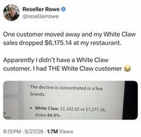

0


"Video game console sales in the U.S. have cratered," reports Tom's Hardware, with sales through August far below where they'd been in 2025:
Mat Piscatella, the video game industry advisor at research firm Circana, shared the numbers on his Bluesky account — PlayStation 5 sales have dropped by 25%, putting it at its lowest point since 2013, when gamers held off buying PlayStation consoles in anticipation of the arrival of the PS4, while Xbox's retail figures have cratered by 33% YTD, putting its sales numbers at an all-time low since its launch almost 25 years ago.
Piscatella said price sensitivity is becoming a real problem among gamers, especially as the chip shortage has pushed console manufacturers to raise prices. Microsoft has raised the price of the Xbox three times in the past two years, with the 512GB versions jumping by $100 and 1TB models becoming $150 more expensive. Worse, the company has killed off the 2TB model. This brought the Xbox Series S to $499.99 (512GB) and $599.99 (1TB), while the Xbox Series X now costs $749.99 for the Digital Edition, and the disc version costs $50 more at $799.99.
PlayStation fans haven't escaped these price hikes, as Sony raised prices for that console by $100 to $150. The base Digital Edition PS5 now costs $599.99, while the version with an optical drive is priced at $649.99. If you want the PS5 Pro, you'll have to shell out $899.99, while those who want to stream games from their console via the PlayStation Portal must now pay $249.99 — $50 higher than its $199.99 launch price. Even used consoles didn't escape inflation, with Sony bumping the price of refurbished PS5 Slim consoles by $100, bringing them to $399.
"Still, Piscatella says the U.S. hardware market has never been more precarious since the early 1980s."
Read more of this story at Slashdot.
CNBC reports:
As Anthropic barrels toward a potential $2 trillion market cap on the Nasdaq, one research firm is valuing the artificial intelligence company at a mere $150 billion and says Wall Street is about to face an "unprecedented test of investor gullibility." In a report on Tuesday, independent financial research provider New Constructs called Anthropic's upcoming offering the "most ridiculous IPO of 2026."
To reach its desired valuation, the firm estimates Anthropic would need to record double the trailing year of profit for Nvidia, the world's most valuable tech company. Nvidia's net income over the past four quarters topped $190 billion. Meanwhile, Anthropic's revenue in 2025 was $4.6 billion as the company racked up a net loss of $42 billion, according to Reuters, which cited a leaked copy of the company's prospectus.
Anthropic's mounting operating losses coupled with emerging competition from a plethora of open-source models led New Constructs to conclude that, "We don't think Anthropic has a viable business...."
Anthropic didn't respond to a request for comment...
The New Constructs report also notes that Anthropic's assertion that AI could pose "a catastrophic or existential risk to humanity" is another reason why investors should avoid the IPO.
Reuters reported that Anthropic's IPO prospectus "highlights risks associated with its AI models, which it said could exhibit 'self-preserving behaviors,' including attempts to 'resist shutdown,' to 'conceal or manipulate information' and behavior 'resembling blackmail.'" Now Bloomberg writes that "investors considering Anthropic's planned mega-IPO are grappling with an unusual, and more than a little scary, conundrum: How to value a company that some fear could help wipe out the human race?"
Anthropic's valuation also drew some scrutiny from
a senior analyst at PitchBook.
"A $2 trillion price is about 435 times 2025 revenue, less than 44 times the annualized second-quarter revenue of more than $46 billion and just under 31 times the July run rate."
Read more of this story at Slashdot.
"Gas cars are now a minority of the world's new car sales," reports Electrek.
Gasoline-only vehicles made up 49% of global new-vehicle sales in the first half of 2026, down from 73% in 2021, according to Mobility Global data first reported by Nikkei. It's the first time on record that they've been under half. But there's a catch: most of the cars taking their place still have a gas tank... [The share of gas-only vehicles] fell three points in a single year, from 52% to 49%. Battery-electric vehicles grew 12% to 6.87 million units and took 17% of the market, up three points. Conventional hybrids grew 10% to 7.27 million units, or 18%... [T]he rest is diesel, plug-in hybrids and a few minor fuels.
Nikkei ties the acceleration to oil. Fuel prices spiked with the conflict in the Middle East, and buyers went looking for lower running costs. The whole car market shrank about 5% in the first half, according to the IEA, so gas-only sales fell twice as fast as the market. Gas car sales dropped the most in China, down 26%, followed by Europe at 13%... Mobility Global has battery-electric sales up 32% in Europe to 1.81 million, up 81% in Southeast Asia to 350,000, and more than doubling in Oceania to 110,000... Yoshiaki Kawano, an associate director at Mobility Global, told Nikkei that few EV buyers go back to gasoline cars or hybrids. He expects demand based on "genuine consumer needs rather than subsidies" to grow as prices come down...
[Hybrids] outsold battery-electric vehicles in the first half, 7.27 million to 6.87 million... Only the 17% that's battery-electric burns no fuel at all. So about 83% of the new vehicles sold in the world this year still came with an engine.
The article notes that U.S. hybrid sales were up 23%, reaching a record 16.3% of vehicles sold in the second quarter of 2026, while the share of ICE vehicles went down.
Gas-only cars went from 73% to 49% of the market in less than five years, and nothing in the data suggests they're getting that share back. The last time gasoline wasn't on top was the early 1900s, when steam and electric cars outsold it in the US.
I hate seeing media headlines claiming that "EV sales are down" and that "EV growth has stalled." The data is clear: that's true in the US, but only in the US. The rest of the world is moving to electric vehicles, and it is not slowing down.
Read more of this story at Slashdot.
There was some Blade Runner news at New York Comic-Con this weekend — and also some news about Godzilla. Ars Technica reports:
We got our first look at Prime Video's new sci-fi series Blade Runner 2099 in July at San Diego Comic-Con. With the show's premiere roughly six weeks away, the streamer unveiled the full trailer this weekend at New York Comic-Con... Prime Video will drop all eight episodes of Blade Runner 2099 on November 25, 2026. [It's already earned 2.1 million views in the last 17 hours].
We also got a new trailer for Godzilla Minus Zero, the sequel to director Takashi Yamazaki's gloriously grounded kaiju epic, Godzilla Minus One, which became a major international hit and snagged an Oscar for best visual effects. [1.2 million views in its first five hours]
And StarWars.com brings news from the Star Wars universe:
Kevin Smith has already announced his Star Wars/Marvel: Hope Assembles crossover comic, interweaving the Marvel universe and the Star Wars galaxy like never before. Now, you're cordially invited to add your own creative ideas to the mix through a LEGO Ideas challenge celebrating the milestone 50th anniversary of Star Wars: A New Hope.
Using physical or virtual LEGO bricks, fans are challenged to build "their own epic mash-ups," according to Lego's web site, "in three categories: Character Fusion, Vehicle Fusion, and Scene Fusion." ("Write an engaging description and upload great images of your creation without using AI tools...")
Meanwhile, Star Trek fan site TrekMovie.com covered the major Star Trek announcements:
There were an interview with 95-year-old William Shatner by Star Trek super-fan Ben Stiller, which ended "with Stiller surprising Shatner by revealing the original Gorn head from his personal Star Trek memorabilia collection."Also announced was a new documentary about the disastrous fan-organized convention in 1982 that tried reuniting cast members from the original series. (Its title? The Con of Wrath: The Craziest Convention Ever!)Gates McFadden (who played Dr. Beverly Crusher on Star Trek: The Next Generation) will write a new comic book to "bridge the 20 year in-universe gap in Crusher's story between the events of the film Star Trek Nemesis and the television series Star Trek: Picard."Paramount+ offered a panel about their series Star Trek: Starfleet Academy (which returns for a second season in 2027).Nacelle Toys even announced new action figures of Star Trek creator Gene Roddenberry and Lucile Ball, owner of Desilu Productions.
Reuters also has photos of costumed attendees.
But there was also some excitement when an unruly fan shouted over a panel for the Prime Video animated series Helluva Boss. Entertainment Weekly reports it culminated with series star Brandon Rogers shouting "You need to shut the f--- up right now. I'm going to jump over this fence and end you. It's not cute."
Read more of this story at Slashdot.
The Chicago Sun-Times reports:
When Elgin Community College hired Flock Safety to install six surveillance cameras in April 2025, President Peggy Heinrich thought they would "enhance the safety and security of students...." They were supposed to help locate stolen cars and missing people. But Heinrich started to wonder if the cameras were actually making students less safe after seeing news reports that data captured by Flock cameras in Illinois had been shared with U.S. Customs and Border Protection. Then in September 2025, Immigration and Customs Enforcement detained an Elgin Community College student in a campus parking lot. More than half of students at the far west suburban Chicago campus identify as Latino. Heinrich said enrollment dipped. Students were afraid to come to class. College officials decided the cameras had to go...
College officials asked Flock to remove the surveillance cameras "out of an abundance of caution for our students," Heinrich said. But getting the cameras taken down was not as simple as it sounds, especially because Flock retains ownership of the company's equipment.... Surveillance experts say the company is financially incentivized to have as many cameras gathering data as possible even in places that no longer want them, because potential clients are looking for the surveillance network with the greatest reach.... Elgin Community College staff notified Flock in October 2025 that they wanted to cancel their contract and have the cameras taken down. Within a day, Heinrich said, Flock rejected the request and refused to uninstall the equipment on the basis that the company had not breached their agreement.
College officials reached out again in December 2025 and said they would pay for the remaining five months of the contract — they just wanted the cameras taken down. "We never received a response back from Flock," Heinrich said.
That's when things got weird. Heinrich said Elgin Community College staff began to cover the cameras using black trash bags and zip ties so that they would not be able to capture footage. But workers in an unmarked vehicle, which Heinrich assumed belonged to Flock, repeatedly removed the coverings... This strange dance continued, Heinrich said, until Elgin Community College's contract with Flock expired in April this year and the company uninstalled the cameras for good.
Read more of this story at Slashdot.
Long-time Slashdot reader badger.foo writes: As some of you may remember, in 2001 RFC1149 (TCP/IP over carrier pigeon) was implemented.
Now one of the packets preserved from that event is up for auction at Christies. Direct link to the auction (current bid: USD 2600) is here.
This is a unique chance to own a piece of Internet history!
Read more of this story at Slashdot.
America's National Highway Traffic Safety Administration "said on Tuesday that it will rewrite its vehicle lighting standards," reports Reuters, "to address concerns about headlight glare and allow for the latest safety-improving lighting technologies."
NHTSA said it plans to improve rules for LEDs, dusk sensors, automatic high beams and replaceable light sources. The agency will also evaluate headlamp height and aim and how they impact driver visibility and address headlight glare and make appropriate changes.
Complaints about glare from headlights have increased and some lawmakers have urged the government to set a maximum headlight brightness standard. A growing number of taller trucks and SUVs on roads has also led to more complaints about glare. LEDs, which now account for most headlights in new cars, are much brighter than traditional halogen headlights... The issue still accounts for a small number of nighttime crashes, according to a study last year from the Insurance Institute for Highway Safety (IIHS). The study noted that headlight glare contributes to far fewer crashes than insufficient visibility...
Federal headlight standards for minimum and maximum brightness have not changed since 1997, IIHS noted. The study found that drivers older than 70 appear to be most affected by headlight glare. In 2022, NHTSA said it would allow automakers to install adaptive driving beam headlights on new vehicles. The devices adjust the headlight beam pattern to dim portions directed at other vehicles.
Thanks to Slashdot reader technology_dude for sharing the news.
Read more of this story at Slashdot.
"What did four astronauts see, notice, and document as they traveled around the Moon during NASA's Artemis II mission?" asks a new NASA web page, offering some fascinating pictures and video:
Through photographs, spoken observations, drawings, and annotations, the Artemis II crew created a unique scientific record — one that is now available to the science community and the public for further study... As part of the mission science plan, lunar scientists asked the Artemis II crew to watch for tiny flashes sparked by rocky fragments hitting the Moon. Even so, some scientists were astonished when astronauts reported seeing five extremely faint "pinprick" bursts of light from 46,000 miles away. After ruling out other sources — cosmic rays or reflections from the spacecraft — the science team confirmed the sightings... The impact flash observations happened during a planned loss of communications while the Artemis II crew was on the far side of the Moon... Apollo astronauts saw similar flashes from lunar orbit, but the Artemis crew likely caught the faintest ever seen with the unaided eye.
From the brightness of the flashes, scientists estimated that incoming rocks were each no more than a couple of inches wide. Despite their size, they were traveling thousands of miles per hour, producing just enough light upon impact to be visible. The nearly hour-long total solar eclipse that the crew experienced while passing by the Moon's far side created ideal dark conditions for spotting such subtle bursts. With no atmosphere to slow or burn up incoming debris, projectiles slam freely into the lunar surface. The crew's direct observations of this process on the Moon's far side provided a rare dataset that will help us understand how often these small impacts occur, which is essential for assessing long-term risks to future lunar habitats and infrastructure...
The crew reported seeing subtle hues of gray, black, brown, tan, white, green, and blue across the Moon's surface. This muted rainbow offers clues to the rocks and minerals that make up different lunar regions, helping scientists piece together how the Moon — and, by extension, Earth — evolved over time.
"Amazing news," Mission Control responded when they heard about the flashes. Space.com reports that when a Mission Control operator looked over at the Science Evaluation Room, "they were jumping up and down, literally."
NASA blogged this week that more than 800 gigabytes of Artemis II lunar science data — some previously unreleased — "have been uploaded to NASA's Planetary Data System, the public archive for NASA's planetary missions."
This data release includes more than 11,000 full-resolution images and video of the Moon from the crew's handheld cameras and the Orion spacecraft's cameras, 8.5 hours of audio recordings of the crew's scientific observations of the lunar surface, and crew-annotated images... Along with this data, NASA has released the Artemis II Preliminary Lunar Science Report, the Artemis II Lunar Science Operations Report, and the Artemis II Lunar Science Data User Guide.
Read more of this story at Slashdot.
CNN reports:
The FBI arrested a Canadian cybersecurity executive and ransomware expert as part of the investigation of a damaging hack that exposed the sensitive data of current and former FBI employees, according to court documents and people familiar the investigation. Edward Dubrovsky was arrested in the Philadelphia area in recent days... Dubrovsky is facing charges related to extortion and making threats. He has been transferred to Texas's Eastern District for a scheduled detention hearing, according to court records and a law enforcement official.
FBI Director Kash Patel announced the arrest on Friday but did not disclose where it occurred or what role the man is suspected of playing in the hack. Patel also didn't name Dubrovsky, but CNN confirmed the defendant is believed to be tied to the FBI hack through multiple people familiar with the investigation... A LinkedIn profile under Dubrovsky's name lists years of experience in the Canadian cybersecurity industry and describes Dubrovsky as a 'globally recognized cybersecurity expert.' An Ed Dubrovsky is also the author of a book on handling ransomware negotiations with cybercriminals...
There has also been an inquest at the FBI over how such a critical security lapse happened. The FBI determined that a contractor managing the bureau's jobs portal failed to update software "explicitly issued to secure the platform," [senior FBI cyber official, Brett Leatherman said last week]. The FBI has "removed the contractor," he said. The software in question is a human-resources platform made by Oracle, ShinyHunters has said. The hackers previously used a flaw in the software to attack targets in the education sector in May and June, according to Google's Threat Intelligence Group. But months later, the FBI contractor apparently still had not applied a security patch that was available for the software.
"The inmate locator at the U.S. Bureau of Prisons website reports that a 54-year-old Edward Dubrovsky is currently being held at a federal facility in Philadelphia," reports security researcher Brian Krebs.
Thanks to long-time Slashdot reader schwit1 for sharing the news.
Read more of this story at Slashdot.
On Thursday those trying to access the Ubuntu website, ISO downloads, and similar Ubuntu resources on Thursday found the site "inoperable," reports Phoronix, with the disruption confirmed as a distributed denial of service attack.
"Our team is working diligently to resolve the incident," according to a Thursday post on Ubuntu Discourse — followed by a later announcement. "At this time our team continues to work on restoring affected services, most of them are now available. We appreciate your patience and understanding." Ubuntu's status page shows the Ubuntu.com outage lasting for 2 hours and 27 minutes on Friday — though with four-hour outages Wednesday (and other outages affecting other Ubuntu sites).
Today "All components are Operational," the status page reports.
Read more of this story at Slashdot.
The Telegraph reports that the nutritional value of fruit and vegetables has fallen by up to 50% since the Sixties, according a new study from researchers at startup studio Deep Science Ventures.
The study "found that humans needed to consume twice the number of vegetables to get the same level of minerals such as potassium, magnesium or copper as would have been present in their food 60 years ago."
The study found that many crops had lost 20% to 50% of several key nutrients... The decrease in nutrient and vitamin value is thought to be down to declining soil quality and crops being selectively bred for their ability to grow quickly, rather than there being any focus on their health benefits... It raises the prospect that the advice to eat five portions of fruit and vegetables a day, introduced in the UK in 2003, may need to be updated. The report added that people on weight-loss drugs could be most at risk from the lack of nutrients, as the treatments could cause them to consume less food...
Nature-friendly farming techniques, such as planting crops that restore nutrients to the soil, could help improve the health benefits of vegetables, according to the researchers.
In short, according to
Will Summers, a senior associate at the firm, "we've been quietly hollowing out what's inside our food."
Thanks to Slashdot reader Bruce66423 for sharing the article.
Read more of this story at Slashdot.
Top executives at Anthropic, OpenAI and other AI companies "are privately gaming out scenarios for a public and political revolt after a catastrophic AI event," reports Axios, one that turns "an already wary public further against the technology and its leaders..."
These AI company executives "anticipate a large-scale event, most likely a cyberattack, that shuts down access to financial services, internet connectivity, or even power and water..." the article points out.
"Many top AI researchers and executives believe a major incident is inevitable.
"OpenAI conducts preparedness exercises where teams discuss and work through a range of potential scenarios," a company spokesperson said. "These scenarios are not treated as inevitable, but are meant to help us prepare for a variety of circumstances." Anthropic declined to comment...
Top AI planners assume Democrats, ascendant after the midterms, will move fast to shut down AI but will face significant challenges... The planning involves red-teaming for worst-case scenarios. It focuses mainly on racing to educate members of Congress. Company executives know regulation has no chance of passing right now, but still want to shape the legislation and policies U.S. leaders will turn to after a first catastrophic event....
Many AI industry insiders told Axios they believe a major event will occur in the next six to 12 months.
"Even with Democrats in control of the House and Senate, the companies see fractured politics as the norm, including within the Democratic Party."
Read more of this story at Slashdot.
The blog It's FOSS reports:
You already know that Canonical has been selectively replacing Ubuntu's C-based system components with Rust-written equivalents that don't compromise in terms of functionality, most of the time. Now it looks like the distro's OpenPGP implementation is next, with Sequoia PGP coming preinstalled in Ubuntu 26.10. Canonical wants it to eventually replace GnuPG [the dominant Linux implementation of PGP, written in C] as the default toolchain, though that switch has not happened yet... [The Ubuntu 26.10 release notes say Sequoia PGP's default status will be a future goal...]
[Sequoia PGP] was started in 2017 by three former GnuPG developers who chose to build a new OpenPGP implementation in Rust rather than keep evolving GnuPG's existing codebase. Sequoia PGP is designed as a library that other software can use directly, rather than a standalone command-line tool. sq sits on top of that for encryption, decryption, signing, and key management, and sqv handles signature verification, filling in for gpg and gpgv in GnuPG.
Sequoia also implements RFC 9580, the 2024 revision of the OpenPGP standard, whereas GnuPG has continued from the RFC 4880 branch, pursuing its own newer extensions and the LibrePGP specification rather than adopting RFC 9580 as its primary standard.
From the It's FOSS Weekly newsletter, which also notes that the founder of the It's FOSS blog has also created a Linux-themed game called TUXDLE — a variation on Wordle where all the answers are Linux terms.
Read more of this story at Slashdot.
Why didn't The Social Reckoning enjoy the box office success of 2010's The Social Network, asks IndieWire/A>:
[T]here wasn't the same urgency in the story being told. The Social Reckoning focuses less on Zuckerberg, and more on data engineer Frances Haugen's decision to blow the whistle on how Facebook's algorithms were promoting political content that radicalized users, as well as the company's awareness of how its products were contributing to a rise in bullying and teen suicide... [B]ut The Social Reckoning arrives as a much greater threat has emerged from Silicon Valley. Artificial intelligence is dominating the headlines, as fears mount about the economic disruptions it will unleash when millions of jobs are replaced by machines, and, graver still, its potential to trigger a world-ending event... And it's not like Haugen's testimony led to lasting change at Facebook... As IndieWire's Ryan Lattanzio put it, "'The Social Reckoning' argues that the aftermath of their whistleblowing is still somehow felt today. In actuality, living as we do in 2026, it pretty much feels like... no one cared, and nothing changed?"
After the first movie's director bowed out, Sony Pictures shied away from selling it as a sequel — but the problems run deeper, the article adds. "The Social Reckoning isn't just a financial failure, it's a critical one, too. The reviews were blistering..." Although on the bright side, "Sony wisely kept The Social Reckoning's budget at $30 million, meaning it won't face losses on the scale of a Digger... "
Variety writes that Digger "cratered in its second weekend with $3.2 million from 3,321 theaters, a 60% decline from its dismal $8 million debut. So far, the Tom Cruise satire has limped to $14 million domestically and $35.3 million globally. Warner Bros. spent above $160 million to produce the film, which is shaping up to be one of the biggest bombs ever..."
Read more of this story at Slashdot.
"Nicolas Cage is speaking out against Amazon," reports Variety. Amazon developed the series Spider-Noir for Prime Video, but then allegedly asked Cage to sign an AI waiver:
"Amazon is a very AI-friendly company, to the tune of $50 billion invested in OpenAI," Cage said Saturday during a panel on the Empire Stage at New York Comic Con. "I am not an AI-friendly actor, so it's like, connect those dots! I'm not a member of their club. I didn't sign the waiver to let him use AI on 'Spider-Noir.' I'm probably not going to be working with that studio again, but that's okay."
Last month Amazon canceled Spider-Man Noir after just one season, Variety reports. And the cancellation was just days before the Emmy Awards, where it then earned 11 nominations (the most of any Prime Video program this year).
ScreenRant reports:
Spider-Noir was the actor's first TV role and was praised globally, with season 1 earning a near-perfect Rotten Tomatoes rating from critics of 92% and a 90% rating from audiences. Critics stated that "This sharply written homage to classic film noir — which includes a standout Nicolas Cage performance — is the novel superhero project fans need," and "Spider-Noir is one of the standout shows of the year...." The cancellation was certainly a huge shock as it had earned 11 Emmy nominations and reached 2.6 billion minutes viewed within its first six weeks on Prime Video.
More from Variety:
Cage went on to tell the Comic-Con audience that he hopes to work with the rising class of Gen-Z filmmakers, praising Backrooms director Kane Parsons, who parlayed his YouTube fame into a Hollywood career... "I got to get with these young directors who are Gen Z, and they're going at it their own way, whether it's through the YouTube culture or whatever it is," Cage said. "They're doing it from scratch and by hand. I want to get with that."
Read more of this story at Slashdot.
Heather Landi / Fierce Healthcare : Vitalize, an AI platform that helps hospitals manage labor and capacity in real time, raised a $31M Series A led by Oak HC/FT, with YC and others participating — Hospital staffing and scheduling is unglamorous, complex and tedious work, and Veeraj Shah, co-founder and CEO of startup Vitalize …
CBS News : Q&A with Palantir CTO Shyam Sankar on the Iran school strike and AI targeting, the DOD dropping Anthropic, AI liability, effective altruism, and more — The following is the full transcript of the interview with Shyam Sankar, chief technology officer of Palantir, a portion of which aired on …
Wall Street Journal : Sources: Amazon is in talks to buy AI startup Decart in a deal that could value it at ~$7B; Anthropic had decided against acquiring Decart for ~$6B in September — San Francisco company's software makes it easier for developers to switch between different AI chips
Terrence O'Brien / The Verge : How Musk and Benioff pledged to rename SpaceXAI and AIForce, while Nadella and Nvidia adopted “super intelligence”, as Silicon Valley falls in line with Trump — Musk, Benioff, Huang, and now Nadella have all capitulated to Trump's ‘super intelligence’ rebrand.
Ann Davis Vaughan / The Information : A look at the economics of Anthropic's data center leases as analysts estimate a 245 MW site could yield ~$1.3B/mo; sources say it signed a cloud deal with IREN — Why is Anthropic driving its partners to speed up the $530 billion of data center leasing deals it has signed?
Tymur Dubovyk / Kyiv Post : Yandex says a drone strike shut down a third data center, disrupting 80+ services like Yandex Cloud and YandexGPT; users report banking and taxi app outages — A Ukrainian drone strike targeted a major Yandex data center in the Russian city of Vladimir early Sunday morning, Oct. 11 …
Mark Gurman / Bloomberg : A look at Apple's smart home strategy, centered on a HomeView display hub, with a new HomePod mini, Apple TV, and second-party accessories from LG and Schneider — Fresh details on Apple's HomeView, HomePod mini and new Apple TV, including release dates, colors, chips and features.
Rafe Rosner-Uddin / Financial Times : PitchBook: robotics and physical AI companies have raised ~$48B YTD, as they gather training data from people completing tasks in factories, offices, and homes — ‘Physical AI’ developers are putting cameras in homes, offices and factories to fill a gap in the training material of robotics
Bloomberg : A look at Beijing-based Neolix, which operates the world's largest robovan fleet at 27K, as Shenzhen tests nighttime parcel deliveries by driverless vehicles — Autonomous vehicle companies believe there's a huge market opportunity in delivering after dark, if the technical challenges can be overcome.
Meir Orbach / CTech : Rein Security, which develops runtime tools to secure enterprise AI agents and stop adversarial AI agents, raised a $25M Series A, taking total funding to $35M — The Israeli startup says its revenue has grown eightfold since January and its platform is now securing thousands of agents that execute millions of actions.
Maria Deutscher / SiliconANGLE : Multiply Labs, which develops robotic systems to automate pharmaceutical manufacturing processes, raised a $75M Series B led by Patrick Soon-Shiong's NantWorks — Multiply Labs Inc., a startup that develops automation equipment for drugmakers, has raised $75 million in funding.
Achint Srivastava / Command Line : Microsoft unveils Microsoft-Decision-1, a fast decision-scoring model trained on Qwen3.5-9B, and says it will soon rebase it on MAI, OpenAI, and other models — Decision models are quickly emerging as an important new category in AI. Unlike LLMs, which are designed to generate text …
Heather Landi / Fierce Healthcare : General Medicine, an online storefront for medical care founded by PillPack founders TJ Parker and Elliot Cohen, raised a $120M Series B led by a16z — General Medicine Andreessen Horowitz Mercy Health Eli Lilly — Artificial intelligence is making healthcare advice easier to access …
Financial Times : After 20+ major Japanese companies reported cyber attacks in recent weeks, Japan's NCSH chief says the country is in “a state of emergency in cyber space” — Dozens of targets including car rental operators, barbecue chains and rail group JR East disclose data leaks
Satya Nadella / @satyanadella : “Super Intelligence systems” are black boxes that shouldn't be trusted by companies, and strong deterministic systems are needed around their deployment — As traditional software systems were being deployed across the economy over the last few decades, we had the tools …